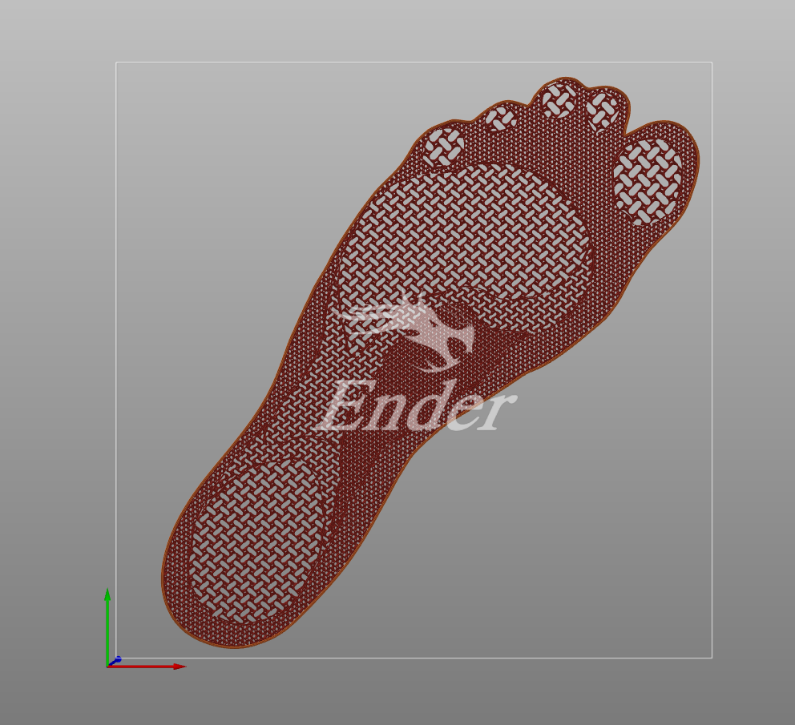
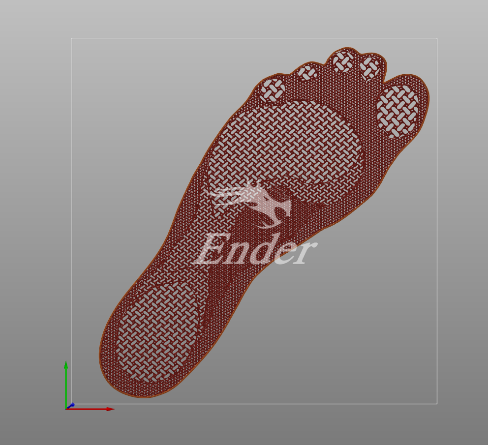

This is a quick and dirty website to showcase the development of my custom variable density orthotic insoles. It will act as a dump, and a blog of sorts to document my progress on the project. Best Viewed on computer


(all info on this site are excerpts from my development log)
I found a model on Thingiverse called "Variable Density Insole" by Gyrobot at
https://www.thingiverse.com/thing:581443/files
This piqued my interest as an interesting concept for an affordable, customisable way for me to create
my own orthotic insoles.
The zones highlighted in different colours are not based on any actual research, more simply how I would
expect different areas would need different amounts of support


The purple shape above is my prototyping of the arch support, with rough measurements using calipers. As you can see this worked, but not super well and may have worked better if I had another way to creating a form

 
